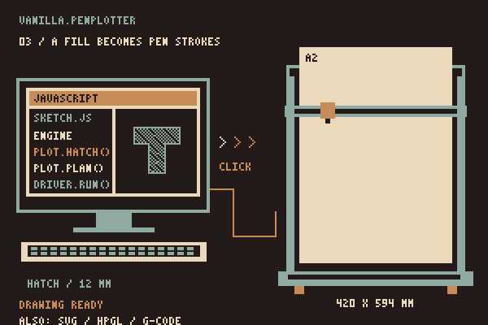

Possibilities
A plotter has no pixels, no grey, no fill. It has one line at a time, a pen you can swap, and all the time in the world. I find that a good set of limits to draw inside. The previews below are drawn live by the engine; the pixel animations explain what the pen does. Take each one as a starting point for a drawing.
Tone from lines
Closer lines usually make a darker patch. Pen width, ink, paper and angle also affect the tone. Let a wave or another sampler choose spacing per cell, then plot a small swatch to find the range you like.
for (const [index, spacing] of [6, 4, 2.6, 1.7, 1.2].entries()) {
plot.hatch(cell(index), { spacing, angle: Math.PI / 4 });
}
plot.crossHatch(cell(5), { spacing: 1.2 });
Dots with space
A stipple is a short dash. The seeded generator keeps a minimum distance between dash centres and repeats the same placement for the same input. A crowded region can yield fewer dots than requested. Pen width and paper decide how the marks read.
plot.stipple(band, { count: 900, minDistance: 1.4, seed: 7 });Pens as layers
A tool describes a pen; a layer names its tool. The planner visits layers in document order and requests a swap when the tool changes. Group layers using the same pen yourself to avoid unnecessary swaps. HPGL pen numbers come from your map, and SVG stores tool metadata per layer.
plot.tool({ id: "blue", color: "#385a86", width: 0.5 });
plot.layer("sky", { toolId: "blue" });
plot.exportHPGL({ penMap: { black: 1, blue: 2, red: 3 } });Routes that shrink
Left: strokes in their input order, with pen-up travel in red. Right: the same strokes reordered and reversed by a greedy nearest-path planner. This example reduces travel; the strategy does not guarantee the shortest route. Use strategy: "drawn" when order matters.
plot.plan({ strategy: "drawn" }).stats.travelDistance; // long
plot.plan({ strategy: "nearest" }).stats.travelDistance; // shortFiles in
The importer reads SVG paths and basic shapes, including nested transform attributes. Curves become sampled points with fixed step counts. Text, images, CSS, viewBox mapping, clipping and compound fills are not reproduced. Inspect the preview and dimensions before plotting an imported drawing.
const doc = Geometry.importSVG(svgText, { curveSteps: 24 });
const fitted = Geometry.transformDocument(doc, Geometry.Matrix.scale(0.3));One plan, several formats
The EBB driver compiles the plan for the tested iDraw. SVG, HPGL and G-code exports provide other routes through software that accepts those formats. Pen commands and tool numbers need to match your setup; an export does not establish direct driver support for that machine.
plot.exportHPGL({ unitsPerMm: 40 });
plot.exportGCode({ penUp: "M5", penDown: "M3 S1000" });
compileEbbPlan(plot.plan(), { profile: "idraw-hse-a2" }).commands;A number in, a line out
The engine only wants points. Anything that returns a number for an x is a drawing: Math.sin, a noise function, or a custom sampler. Sample at a fixed time and the animation becomes a sheet; sample at ten times and you have a series.
for (let x = 20; x <= 190; x += 0.5) {
points.push({ x, y: 60 + wave(x) });
}
plot.polyline(points);Series, not singles
A plotter makes editions. One rule, one seed per sheet, four engines, four plans, four files with the same name and a number: the workflow of a print run, in a loop.
for (const seed of [1, 2, 3, 4]) {
const plot = build(seed);
download(`sheet-${seed}.svg`, plot.exportSVG());
}Everything here runs without hardware. With an iDraw HSE / A2 attached, Direct plot takes any of these plans to paper; the roadmap says what the driver still lacks.